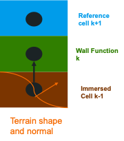

Theory Manual
Governing equations
Conservation of fluid mass:
Conservation of fluid momentum:
Incompressibility constraint:
Tracer(s) advection:
Discretization
The numerical methodology used to solve the partial differential equations (PDEs) within AMR-Wind is documented in Almgren et al. (JCP 1998). AMR-Wind uses AMReX-Hydro for many advection routines. The reader is referred to their documentation for implementation details.
Time Step – MOL
In the predictor
Define \(U^{MAC,n}\), the face-centered (staggered) MAC velocity which is used for advection, using \(U^n\)
Define an approximation to the new-time state, \((\rho U)^{\ast}\) by setting
Project \(U^{\ast}\) by solving
then defining
and
In the corrector
Define \(U^{MAC,\ast \ast}\) at the “new” time using \(U^{\ast \ast}\)
Define a new approximation to the new-time state, \((\rho U)^{\ast \ast \ast}\) by setting
Project \(U^{\ast \ast \ast}\) by solving
then defining
and
Time Step – Godunov
Define \(U^{MAC,n+1/2}\), the MAC velocity which is used for advection. This velocity is interpolated to the cell faces and extrapolated forward in time using a Taylor expansion. Then it is projected to form a divergence-free velocity field.
Time discretization of momentum governing equation
The time step goes from \(n\) to \(n+1\) with the right-hand-side at \(n+1/2\).
The time discretization of \(\boldsymbol{\tau}\) depends on the method chosen to compute diffusion.
Partition the discretized equation into two steps, the Predictor and Applying the Projection. The predicted state, \(\ast\), is an approximation to the new-time state, \(n+1\).
In order to calculate \(\rho \boldsymbol{U}^{n+1/2}\) within the advection term, the momentum must be interpolated to the faces and extrapolated forward in time a half step, similar to the face velocities involved in the MAC projection. To do this for the momentum, the routine uses the momentum, pressure gradients, source terms, and diffusion terms at \(n\), as well as \(\boldsymbol{U}^{MAC,n+1/2}\).
In the case of variable density single-phase or multiphase simulations, the density at \(n+1\) is found using separate scalar equations, which are solved during the predictor step. Because density has no projection step,
Therefore, the equation that applies the new pressure gradient becomes
The pressure gradient at \(n+1/2\) is found by solving the projection
Solving physics on a stretched AMReX mesh
Often for simulations involving walls, (e.g., channel flows, complex terrains etc.) it is desirable to have finer mesh near the wall which gradually coarsens only in the wall-normal direction. Consequently, modifications within AMR-Wind are underway to support solving a non-uniformly spaced mesh while still using most of AMReX’s machinery directed at uniformly-spaced Cartesian meshes. The governing equations solved on a non-uniform stretched mesh are further explained below -
Multiphase flow modeling
AMR-Wind employs the volume-of-fluid method for simulating two-phase (water-air) flows. More specifically, the volume fraction field is advected explicitly using a directional split geometric approach, and the advection of momentum is discretized in a mass-consistent manner. Overall, this approach conserves mass and momentum while remaining stable at high density ratios (typically 1000). Viscosities can be specified for each fluid independently, but surface tension is not modeled by AMR-Wind currently. For further detail, see Kuhn, Deskos, Sprague (Computers & Fluids 2023).
Source terms
Gravity Forcing
The implementation of this source term allows the user to choose the full gravity term (\(\rho g\)) or a perturbational form (\((\rho - \rho_0) g\)). By default, the full term is used, but the perturbational form can be turned on by adding ICNS.use_perturb_pressure = true to the input file.
The reference density (\(\rho_0\)) is defined as 1.0 by default, can be defined as a constant through the input argument, incflo.density, or can be defined as a spatially varying field within the flow setup (see physics/multiphase/Multiphase.cpp).
Using the perturbational form implies that the hydrostatic pressure is removed from the pressure variable, including its output. This means that the solution to the Poisson equation is actually the perturbational pressure, \(p'\), not \(p\). If the full pressure, \(p\), is desired for analysis or postprocessing purposes, the hydrostatic pressure can be added back to the pressure field via the input argument ICNS.reconstruct_true_pressure = true. In order for this to operate in the code, the reference pressure field must be defined for the specific flow case being run.
An example of this is in physics/multiphase/Multiphase.cpp. To construct the reference pressure field, the reference gravity term must be integrated. This particular example assumes that the reference density only varies in z (or is constant), gravity acts only in z, and the hydrostatic pressure at the high z boundary is equal to 0.
In mathematical form, the derivation and calculation of the full pressure is as follows:
assume \(\boldsymbol{g} = g\hat{k}\) and \(\frac{dp_0}{dz} = g\hat{k}\)
change reference frame to the top boundary, and assume \(p(z = z_{max}) = 0\)
Mesoscale Forcing
To incorporate larger-scale atmospheric dynamics under real conditions, AMR-Wind offers two approaches. If mesoscale momentum and/or temperature source terms are known exactly, e.g., from a numerical weather prediction (NWP) model, then these may be directly applied. These mesoscale source terms would come from the RHS of the mesoscale equations of motion and may also include the effects of additional modeled physics such as radiation or moisture. This mesoscale forcing approach is called the “tendencies” (or “mesoscale budget components”) approach. For more information, see Draxl et al. (BLM 2021)
If the mesoscale source terms are not known a priori, they may be derived on the fly with a profile assimilation technique. This is an engineering approach that applies a proportional controller to drive the instantaneous planar averaged wind and/or temperature profiles towards known time–height data. This approach can be used with NWP model output or observational data. For more information, see Allaerts et al. (BLM 2020)
The application of these forcing approaches is detailed here.
Actuator Forcing
Calculating actuator forces relies on sampling the velocity field at actuator points at the beginning of each time step (n). Actuator-based models, i.e., actuator lines and actuator disks, rely on internal implementations (e.g., Joukowsky disk, actuator-line wing) or external turbine tools (OpenFAST) that use these sampled velocities to calculate forces and the motion of actuator points. When the Godunov method is used, the motion of actuator points must be incorporated into the application of actuator forces. This is because the Godunov method discretizes source terms at the half time step (n+1/2). Therefore, the actuator force vectors are calculated using fluid velocities at n, and these actuator forces are applied at locations corresponding to n+1/2.
Turbulence Models
RANS models
The RANS models are available in two flavors: wall-modeled and wall-resolved. The former model is designed for cases with \(y+ > 30\) while the latter requires \(y+ < 5\). The wall-modeled RANS model available in AMR-Wind is based on the work of Axell and Liungman (EFM 2001 ). The code also includes Menter’s K-Omega SST model with IDDES support.
Axell One-Equation RANS Model
The one-equation model solves the transport equation for turbulent kinetic energy (TKE). The length scale is computed using algebraic equations. The transport equation for TKE is given by:
Here \(P_s\) is the shear production term, \(P_b\) is the buoyancy production/destruction term, \(\epsilon\) is the turbulent dissipation rate and \(D\) is the turbulent diffusion term. These terms are computed as follows
Here \(P_s\) is the strain rate, \(P_b\) is the buoyancy frequency and \(L\) is the length scale computed algebraically. The strain rate and buoyancy frequency are computed using the same method used in the literature and are not repeated here. The length scale is computed as follows:
The shear length scale is given by \(Ls=\kappa z\). An upper limit can be imposed for the shear length scale to avoid excessive values. In the current model, it is set to 30 and can be modified to be computed from Geostrophic wind too. The buoyancy length scale is given by
The implementation methodology is different for stable/neutral and unstable stratification and follows the recommendation in the paper. The turbulent viscosity is computed as follows:
Here \(C_\mu\) and \({C_\mu}^{'}\) are non-uniform model constants which depend on \(C_0\) and turbulent Richardson number \(Rt\). The calculations of these terms can be found in the reference. The turbulent Prandtl number also depends on the turbulent Richardson number and is computed using am empirical expression from the reference. The boundary condition for TKE at the lower boundary is given by:
Here \(Q\) is the sensible heat flux at the surface and \(d_1\) is the near-wall distance. For cases with terrain, there is also a check for near-wall distance from the surface of the terrain. The wall boundary condition is implemented as a forcing term at the first cell above the lower surface and terrain.
LES models for subgrid scales
Smagorinsky model
Simple eddy viscosity model, the dissipation is calculated using the resolved strain rate tensor and the grid resolution as
AMDNoTherm model
This is the implementation of the base AMD model, useful for flows without a temperature field.
The eddy viscosity is calculated using an anisotropic derivative with a different filter width in each direction
The anisotropic derivative is used to define the eddy viscosity as
AMD model (for ABL)
The eddy viscosity is calculated using an anisotropic derivative with a different filter width in each direction
The anisotropic derivative is used to define the eddy viscosity as
Unit tests
There is a simple unit test for both \(\nu_t\) and \(D_e\) in
unit_tests/turbulence/test_turbulence_LES.cpp under
test_AMD_setup_calc.
Non-linear Sub-grid Scale Model
The non-linear model extends the Smagorinsky model by including an extra term computed from the strain and vorticity rate. The modification proposed by Branco (JFM 1997) and implemented in WRF (Mirocha et. al (MWR 2010)) is the model considered. The sub-grid scale stress tensor is calculated as follows:
\[M_{ij}= -(C_s \Delta)^2 [ 2(2S_{mn}S_{mn})^{1/2}S_{ij}+C_1(S_{ik}S_{kj}-\frac{1}{3}S_{mn}S_{mn} \delta_{ij}) +C_2(S_{ik}R_{kj}-R_{ik}S_{kj}) ]\]
Here \(S_{ij}\) is the strain-rate tensor and \(R_{ij}\) is the vorticity rate tensor. The model constants are: \(C_s=[8*(1+C_b)/27\pi^2]^{1/2}\), \(C_1=C_2=960^{1/2}C_b/7(1+C_b)S_k\), \(S_k=0.5\), and \(C_b=0.36\).
The default length scale of \(L=C_s\Delta\) causes over-prediction of the mean wind speed profiles. To avoid this over-prediction, the length scale is modified as follows
Here the term \(H=1.5 dz\) specifies the location at which the length scale switches to \(L=C_s\Delta\) and \(\phi_M\)
is the atmospheric stability function. Currently, the implementation for the stability function uses a single global value.
The implementation of the non-linear model is split into two parts. The subgrid-scale viscosity term is directly used
within the AMR-Wind diffusion framework. The last two terms in \(M_{ij}\) are added as source-terms in the momentum equation.
Wall models
The wall models described in this section are implemented in AMR-Wind for
running wall-bounded flows.
Monin-Obukhov Similarity Theory
Monin-Obukhov similarity theory is used for wall boundary conditions for ABL simulations. The exact calculation of \(tau_{i3}\) in the horizontal directions depends on the SGS model used, but the following calculations for the friction velocity \(u_\tau\) and surface heat flux q are common across the models.
where \(s\) is the horizontal wind speed \(s = \sqrt{u_{1}^2+ u_{2}^2}\), \(\theta_w\) is the wall temperature, \(\kappa\) is the von Karman constant, and \(z_0\) is the surface roughness length and :math: z_b is the reference height (default is the first cell center). The \(\overline{\phantom{l}.\phantom{l}}\) operator indicates a horizontal plane average. The quantities \(\psi_m, \psi_h\) are computed using the Monin-Obukhov similarity law following the calculations in ven der Lann et al <https://doi.org/10.1002/we.2017> and Dyer (1974) formulation for unstable stratification (\(z_b/L < 0\)):
and for stable stratification (\(z_b/L > 0\) ):
where \(L = -\frac{u_\tau^3 \theta_0}{\kappa g q}\) is the Monin-Obukhov length and \(\beta_m, \beta_h, \gamma_m, \gamma_h\) are model constants. AMR-Wind uses \(\beta_m = \beta_h = 16\) and \(\gamma_m = \gamma_h = 5\).
Log-law wall model
This wall model computes the local \(u_\tau\) from the velocity at the first grid cell, and uses this to compute the shear stress, which is then used as a boundary condition.
The log law:
Given a horizontal velocity magnitude \(u_{\mathrm{mag}} = \sqrt{u^2 + v^2}\) at \(z = z_{\mathrm{ref}}\), \(u_\tau\) can be computed using a non-linear solve to satisfy [eq:loglaw].
In AMR-Wind Newton-Raphson iterations are used with a convergence
criterion of \(\lvert u_\tau^{n+1} - u_\tau^n \rvert < 10^{-5}\).
For this, derivative of
\(\frac{\partial u_{\mathrm{mag}}}{\partial {u_\tau}}\) is used,
Finally, the shear stress is calculated as,
Constant stress model
NOTE: This wall model will be ill-posed unless combined with a Dirichlet boundary condition on the other wall, \(\langle u \rangle\) can drift by a constant otherwise.
This is a trivial wall model, where the shear stresses are specified as constants. For a pressure gradient driven channel,
Schumann model
NOTE: This wall model will be ill-posed unless combined with a Dirichlet boundary condition on the other wall, \(\langle u \rangle\) can drift by a constant otherwise.
This model is a modified version of the constant stress model, where the fluctuations from a reference height \(z_\mathrm{ref}\) are used to add fluctuations in the shear stress.
where, \(\langle u_\mathrm{mag} \rangle\) is the planar average of \(u_{\mathrm{mag}} = \sqrt{u^2 + v^2}\) at \(z_\mathrm{ref}\).
Symmetric wall boundary
This is a boundary condition to for flows with a symmetry across the z direction (example: half-channel simulations) at the centerline.
Dynamic wall model (Wave model)
This wall model is used to calculate the stress due to moving surfaces, like ocean waves. It aims to introduce wave phase-resolving physics at a cost similar to using the Log-law wall model, without the need of using wave adapting computational grids. The model was developed by Ayala et al. (2024).
The first component gives the form drag due to ocean waves, where \(\boldsymbol{C}\)
is the wave velocity vector, \(\eta\) is the surface height distribution and
\(\hat{\boldsymbol n} = \boldsymbol{\nabla} \eta /|\boldsymbol{\nabla} \eta|\). The
second component (\(\tau^{visc}_{i3}\)) is the stress due to unresolved effects,
like viscous effects. For this component, the Log-law wall model is used.
Terrain Model
An immersed boundary forcing method (IBFM) is used to represent the terrain. In this method, the effect of the terrain is modeled using a forcing term in the momentum and energy equation.
The forcing term in the momentum equation is given by:
Here \(\beta\) is the volume fraction of the cell covered by terrain, \(C_d\) is a drag term and \(u_i\) is the wind speed. Currently, the volume fraction is computed as a 0 or 1 using a simple nearest cell algorithm at each grid level. Future, updates will incorporate the partial terrain overlap using the EB capability in AMReX. The calculation of the drag coefficient term and the forcing term for the energy equation can be found in Muñoz‐Esparza, Domingo, et al. (JAMS 2020).
The original formulation is designed for low Reynolds number cases and does not include a method for applying a wall function. We propose the use of a forcing function to include the wall effects.
First, compute the friction velocity from location k+1:
The expected wind speed at cell k is computed as follows:
The methodology can be extended to include stability functions in a straight forward manner. The forcing term is computed as
Here \(\hat{c}=(1,1,1)\) is the existing normal vector from the grid and \(\hat{l}=(ux,uy,0)/|u_n|\) is the value from the log law. The calculation of \(\hat{l}\) and \(u_*\) can be modified in the future align with the normal (following the orange arrow below).
{kind=link}
Forest Model
The forest model provides an option to include the drag from forested regions to be included in the momentum equation. The drag force is calculated as follows:
Here \(C_d\) is the coefficient of drag for the forested region and \(L(x,y,z)\) is the leaf area density (LAD) for the forested region. A three-dimensional model for the LAD is usually unavailable and is also cumbersome to use if there are thousands of trees. Two different models are available as an alternative:
Here \(LAI\) is the leaf area index and is available from measurements, \(h\) is the height of the tree, \(z_m\) is the location of the maximum LAD, \(L_m\) is the maximum value of LAD at \(z_m\) and \(n\) is a model constant with values 6 (below \(z_m\)) and 0.5 (above \(z_m\)), respectively. \(L_m\) is computed by integrating the following equation:
The simplified model with uniform LAD is recommended for forested regions with no knowledge of the individual trees. LAI values can be used from climate model look-up tables for different regions around the world if no local remote sensing data is available.